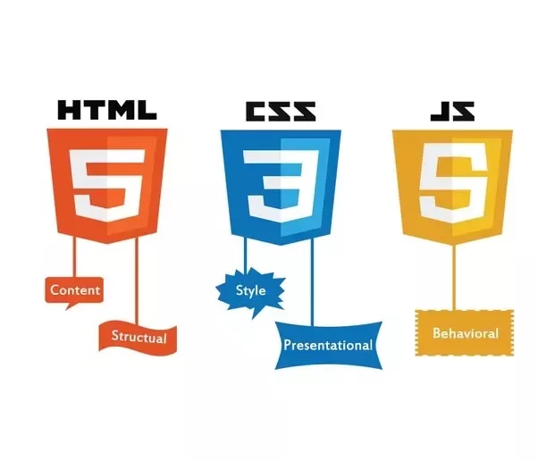

The website you are currently viewing, how the paragraphs are layed out, how the buttons work, how the colour schemes and pictures align together; all of that
is just a short representation of what Frontend Development is. In short, Frontend Development focuses on the user interface and design of a website, anything the user sees
and can click is apart of Frontend Development. Every time you use any sort of website or mobile application, some frontend development took place.
Frontend Development also works with the user experience (UX) which falls hand in hand with the user interface (UI). User experience is how a user is going to use the product,
a common UX feature on E-Commerce websites is to have a shopping cart on the top-right corner to symbolize what and how many items you have added.
A Frontend Developer's role is to make sure the style and the interface of a website is a well designed and appealing.
One major factor in frontend development is responsiveness.
Most of the time people have their phones with them more than they carry their laptops around so it only makes sense that they do more browsing on their phone compared to their computer.
This is why being able to build responsive sites is important, when frontend developers are designing websites they need to keep this consideration in mind and alter how the site looks on
different screen sizes. This is done by using a programming language called CSS which will be talked about later.
Languages Used In Frontend
There are typically three main programming languages that are used to create and design websites. These languages are HTML, CSS, & JavaScript. These three are the necessary building blocks for any website.
With the combination of these three languages, they bring websites to life with proper structure, styling, and interaction.

A website's structure and information are provided by HTML. The fundamental structure of a web page, including its headings, paragraphs, lists, and connections, is created using HTML.
When a user accesses a website, their web browser deciphers the HTML code and renders the webpage's information.
The visual style and layout of HTML texts are specified using CSS. Colour schemes, fonts, spacing, and layout can all be altered using CSS, giving websites a unique appearance and feel. Additionally, responsive designs that adjust to various screen sizes and platforms can be made using CSS.
Web sites can be made dynamic and interactive using JavaScript. Developers can incorporate interactive elements like animations, pop-up windows, and form validation into web sites by using JavaScript. More sophisticated web apps, like online games and interactive maps, can be made using JavaScript.
When you think of interactions like the drag & drop feature, JavaScript is what makes elements like that work.
Different Aspects of Frontend
There is a lot more to frontend web development than just HTML, CSS, and JavaScript. Frameworks and libraries are frequently used by developers to help with the creation of more complex web apps quickly and effectively.
React, Angular, Vue.js, and Ember.js are a few of the more popular frameworks. These frameworks offer pre-built solutions for typical web development issues, allowing developers to concentrate on improving user experiences while saving time.
For instance, Angular is a framework that aids in the creation of complete web apps, whereas React is a library that aids in the creation of user interfaces. It's critical for developers to select the framework that best meets their
requirements because each of these frameworks has a distinct set of features and advantages.
Those are all frameworks and libraries that deal with JavaScript, but there are also CSS frameworks that are responsible more making styling and designing easier.
Bootstrap is one of the most popular CSS frameworks. It includes a wide range of pre-built components, such as buttons, forms, and navigation menus, as well as a grid system that allows developers to create
responsive layouts that work well on different devices.
On the other side, Tailwind adopts a different strategy. Tailwind offers a collection of classes that can be used to apply common styles to HTML elements rather than pre-built components. For instance, you can use the
class "text-red-500" to make text red or the class "bg-gray-200" to give an element a backdrop colour.
Both Bootstrap and Tailwind can be useful for developers who want to create stylish and responsive websites quickly and easily.
How to Get Started in Frontend?
There are many routes one can take in order to get started in Frontend Development, one of the most common ways people learn the skills needed for
frontend development is through being self taught or doing a coding bootcamp. These are better options in comparison to going to school for a computer science degree
because attending a program like that will teach you about the theory of computing which could be beneficial to know but not necessarily required in order to do frontend development.
When starting out in frontend the roadmap is quite similar for everyone.
HTML, CSS, JavaScript in that same particular order, but it makes sense considering what each of the languages do. You can't have a website without structure, that's
the purpose of HTML. You can't have a structured but not visually appealing website, that's the purpose of CSS. JavaScript is like the icing on the cake, it provides
complexity, animation, it provides the full look of the website.
There are plenty of videos on YouTube that provide insight on Frontend Development. To the right is a beginners guide on how to begin your journey with Frontend Development.